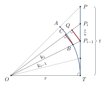

Chapter 6: The Kerala School: Infinite Series and Their Rationales¶
Between the late fourteenth and the early seventeenth century, a succession of astronomer-mathematicians in central Kerala produced some of the most remarkable mathematics of the premodern world. Beginning with Mādhava of Saṅgamagrāma (c. 1340–1425), they found infinite series for \(\pi\) and for the sine, cosine and arctangent, devised corrections that make the series for \(\pi\) converge rapidly, computed \(\pi\) to eleven decimal places, and wrote out reasoned derivations of these results. Equivalent series were found in Europe in the second half of the seventeenth century by James Gregory, Isaac Newton and Gottfried Wilhelm Leibniz. The Kerala results remained unknown outside Kerala until 1834, and their full mathematical content was established only in the twentieth century (Plofker 2009; Sarma et al. 2008; Sarma 1972).
6.1 The School and Its Members¶
The “Kerala school” is a modern name for a chain of teachers and pupils working in the region between the rivers Nila (Bhāratappuḻa) and Periyar in central Kerala, in the tradition of Āryabhaṭa. Most of Mādhava’s own writings are lost, and his results are known chiefly from quotations and attributions in the works of his successors. Table 6.1 lists the principal members.
| Scholar | Dates | Works and contributions |
|---|---|---|
| Mādhava of Saṅgamagrāma | c. 1340–1425 | Veṇvāroha, Sphuṭacandrāpti and other astronomical works; the infinite series, known through his successors |
| Parameśvara | c. 1360–1455 | Dṛggaṇita (1431); long series of eclipse observations; commentaries; formula for the circumradius of a cyclic quadrilateral |
| Dāmodara | 15th c. | Son of Parameśvara; teacher of Nīlakaṇṭha and Jyeṣṭhadeva |
| Nīlakaṇṭha Somayājī | 1444–c. 1545 | Tantrasaṅgraha (1500); Āryabhaṭīyabhāṣya; revised planetary model |
| Jyeṣṭhadeva | c. 1500–1610 | Yuktibhāṣā (c. 1530), in Malayalam: derivations of the series |
| Citrabhānu | fl. 1530 | Systems of equations in two unknowns (Ekaviṃśatipraśnottara) |
| Śaṅkara Vāriyar | c. 1500–1560 | Kriyākramakarī on the Līlāvatī; Yuktidīpikā on the Tantrasaṅgraha |
| Acyuta Piṣāraṭi | c. 1550–1621 | Sphuṭanirṇaya and other works; pupil of Jyeṣṭhadeva |
| Putumana Somayājī | 17th–18th c. (uncertain) | Karaṇapaddhati: a computational manual using the series |
The dates in the table are approximate. Those of Nīlakaṇṭha and Jyeṣṭhadeva are the conventional ones, derived from chronograms in the texts and from later tradition as collected by K. V. Sarma (Sarma 1972); taken literally they imply lives of about a century, and they should be read as marking the span within which each author is attested rather than as exact birth and death dates.
Mādhava is said to have lived in the village of Saṅgamagrāma, usually identified with Irinjalakuda near Thrissur; the identification rests on tradition, though it is plausible. His surviving works include the Veṇvāroha, a short text giving accurate positions of the Moon, and the Sphuṭacandrāpti. The series and the corrections attributed to him are quoted by Nīlakaṇṭha, Śaṅkara Vāriyar and Jyeṣṭhadeva, who name him as their source. Because the attributions come from his successors, it is not always possible to separate what Mādhava found from what they added, and historians speak of “Mādhava and his school” (Plofker 2009; Sarma 1972).
6.2 The Series for π¶
The basic series for the circumference of a circle is given in a verse that Śaṅkara Vāriyar quotes and attributes to Mādhava:
Attributed to Mādhava, quoted in the Kriyākramakarī and Yuktidīpikā
vyāse vāridhinihate rūpahṛte vyāsasāgarābhihate
triśarādiviṣamasaṃkhyābhaktam ṛṇaṃ svaṃ pṛthak kramāt kuryāt
“The diameter multiplied by four (‘the oceans’) and divided by one: from this, subtract and add in turn the diameter multiplied by four and divided separately by the odd numbers three, five and so on.”
That is, for a circle of diameter \(d\),
This is the series that James Gregory knew in 1671 in the more general form of the arctangent series, and that Leibniz published in 1682 (he had found it in 1673–74).
6.2.1 End-corrections¶
The series converges very slowly: after \(n\) terms the error in \(\pi/4\) is about \(1/(4n)\), so that a thousand terms give \(\pi \approx 3.1406\), correct only to two decimal places. The Kerala mathematicians knew this, and they corrected the partial sum by adding a term that approximates the rest of the series. If the sum is stopped after the term \(\mp 1/(2n-1)\), that is after \(n\) terms, they add or subtract a correction \(F_n\), with the sign of the next term. Three successively better corrections are given:
With \(S_n = 1 - \tfrac13 + \cdots + \tfrac{(-1)^{n-1}}{2n-1}\), the corrected value is \(\tfrac{\pi}{4} \approx S_n + (-1)^n F_n\).
Mathematical Result: How good are the corrections?
Recomputed values of the error in \(\pi\) (that is, \(4\times\) the error in \(\pi/4\)) after \(n\) terms:
| \(n\) | no correction | \(F^{(1)}\) | \(F^{(2)}\) | \(F^{(3)}\) |
|---|---|---|---|---|
| 10 | \(1.0\times 10^{-1}\) | \(2.5\times10^{-4}\) | \(2.4\times 10^{-6}\) | \(5.2\times 10^{-8}\) |
| 25 | \(4.0\times 10^{-2}\) | \(1.6\times10^{-5}\) | \(2.5\times 10^{-8}\) | \(9.1\times 10^{-11}\) |
| 50 | \(2.0\times 10^{-2}\) | \(2.0\times10^{-6}\) | \(8.0\times 10^{-10}\) | \(7.2\times 10^{-13}\) |
With the third correction, fifty terms give \(\pi\) correct to about twelve decimal places.
How the corrections were found is explained in the Yuktibhāṣā and the Kriyākramakarī: the authors seek a correction such that the corrected sums for \(n\) and \(n+1\) terms agree as closely as possible, and they improve it step by step.
Scholarly Note: The criterion in modern form
If the corrected value is to be the same whether one stops after \(n\) or after \(n+1\) terms, then, since the \((n+1)\)-th term is \(\pm\frac{1}{2n+1}\), the correction must satisfy
No simple rational function satisfies this exactly, but one can make the discrepancy small. For the three Kerala corrections the discrepancies are
which for large \(n\) behave like \(\frac{1}{8n^3}\), \(-\frac{1}{8n^5}\) and \(\frac{9}{32n^7}\). Each correction is thus much better than the last, which explains the rapid improvement shown in the table above. The Yuktibhāṣā carries out the equivalent reasoning in words, measuring the “grossness” (sthaulya) of each correction and seeking to reduce it.
T. Hayashi, T. Kusuba and M. Yano showed in 1990 that the three corrections are the successive approximations (convergents) of the continued fraction
which represents the remainder of the series exactly. Whether the Kerala mathematicians saw the corrections in this way is not known (Hayashi et al. 1990; Plofker 2009).
6.2.2 Faster series¶
The same sources give transformed series that converge much faster. One, attributed to Mādhava, is
which is the arctangent series for \(\arctan(1/\sqrt{3}) = \pi/6\). Each term is about a third of the previous one, and after 21 terms the error is less than \(10^{-11}\). Others are obtained by combining terms of the basic series in pairs, for example
whose terms decrease like the inverse cube.
6.2.3 The value of π¶
A verse attributed to Mādhava gives the circumference of a circle of diameter \(9 \times 10^{11}\) in word-numerals (bhūtasaṃkhyā):
Attributed to Mādhava
vibudhanetragajāhihutāśanatriguṇavedabhavāraṇabāhavaḥ
navanikharvamite vṛtivistare paridhimānam idaṃ jagadur budhāḥ
“Gods (33), eyes (2), elephants (8), serpents (8), fires (3), three (3), qualities (3), Vedas (4), lunar mansions (27), elephants (8), arms (2): the wise have said that this is the measure of the circumference when the diameter is nine nikharva (\(9\times 10^{11}\)).”
Read from the last word to the first, the numbers give \(2\,8\,27\,4\,3\,3\,3\,8\,8\,2\,33\), that is \(2{,}827{,}433{,}388{,}233\). Hence
correct to eleven decimal places (\(\pi = 3.14159265358979\ldots\)). This was an outstanding achievement, but not a unique one: in Samarqand the astronomer Jamshīd al-Kāshī calculated \(2\pi\) to the equivalent of sixteen decimal places in 1424, by inscribing polygons, and Mādhava’s exact date for his value is not known. In Europe Ludolph van Ceulen published \(\pi\) to 20 places in 1596, and 35 places were published after his death.
6.3 The Sine, Cosine and Arctangent Series¶
The Kerala texts also give series for the sine and cosine of an arc. In the Indian form, with the arc \(s\) measured in the same units as the radius \(R\), they read
which, with \(\theta = s/R\), are the familiar
The texts also give a series for the arc in terms of its sine and cosine, which is equivalent to the arctangent series
and from which the series for \(\pi/4\) follows by taking \(\theta = 45^\circ\). In Europe the sine and cosine series were found by Newton (1669, published later), and the arctangent series by Gregory (1671).
For practical computation, the Kerala astronomers arranged the terms of the sine series so that they could be evaluated by repeated multiplication and division (Section 6.8), and they gave a table of sines for the 24 standard arcs, more accurate than Āryabhaṭa’s, encoded in a verse in the kaṭapayādi notation. Mādhava’s sine values are given in minutes, seconds and thirds of arc (a third being a sixtieth of a second), which corresponds roughly to seven or eight significant figures (Plofker 2009; Gold and Pingree 1991).
6.4 The Yuktibhāṣā: Derivations¶
6.4.1 The text¶
The Yuktibhāṣā (“Discourse on rationales”), written in Malayalam by Jyeṣṭhadeva around 1530, sets out the reasoning behind the mathematics and astronomy of Nīlakaṇṭha’s Tantrasaṅgraha. Its first part, on mathematics, explains the arithmetic operations, the “ten questions” on finding two quantities from their sum, difference, product and so on, fractions, the rule of three and the theorem of the right triangle, and then derives the series for \(\pi\), the corrections, and the sine and cosine series. Its second part treats astronomy. It is written in continuous prose and argues step by step. K. V. Sarma’s edition, with an English translation and explanatory notes by K. Ramasubramanian, M. D. Srinivas and M. S. Sriram (2008), has made it accessible to modern readers (Sarma et al. 2008). Śaṅkara Vāriyar’s Sanskrit commentaries give closely related derivations.
6.4.2 Polygons first¶
Before deriving the series, the Yuktibhāṣā explains how the circumference can be approached by polygons. Starting from the square inscribed in (or circumscribed about) a circle, the number of sides is doubled repeatedly, and at each stage the side of the new polygon is computed from the side of the old by the rule of the right triangle. The perimeters approach the circumference, but slowly: for inscribed polygons in a circle of diameter 1,
| Sides | Perimeter | Sides | Perimeter |
|---|---|---|---|
| 4 | 2.8284 | 128 | 3.14128 |
| 8 | 3.0615 | 256 | 3.14151 |
| 16 | 3.1214 | 512 | 3.141573 |
| 32 | 3.1365 | 1024 | 3.141588 |
| 64 | 3.1403 |
Each doubling requires the extraction of a square root, and many doublings are needed for even modest accuracy. The text uses this to motivate a better method, which leads to the infinite series.
6.4.3 The derivation of the series for π¶
The argument for the series of \(\pi\) may be summarised as follows; Section 6.5 follows it step by step, in its general form.
-
Consider a circle of radius \(r\) inscribed in a square, and the part of one side of the square that runs from the point where the circle touches it to the corner; its length is \(r\), and it subtends one eighth of the circumference. Divide this segment into \(n\) equal parts and join the division points to the centre. The lines cut the eighth of the circle into \(n\) small arcs.
-
Using similar triangles, each small arc is approximately
\[\frac{r^2\,(r/n)}{r^2 + x_k^2},\]where \(x_k = kr/n\) is the distance of the \(k\)-th division point from the point of contact, so that \(\sqrt{r^2 + x_k^2}\) is its distance from the centre.
-
The fraction \(1/(r^2 + x^2)\) is expanded as a series by repeated division:
\[\frac{1}{r^2 + x^2} = \frac{1}{r^2}\left(1 - \frac{x^2}{r^2} + \frac{x^4}{r^4} - \cdots\right).\] -
The resulting sums of powers \(\sum_{k=1}^{n} k^p\) are needed for large \(n\). Here the text uses the result, which it also derives, that for large \(n\)
\[\sum_{k=1}^{n} k^p \approx \frac{n^{p+1}}{p+1}.\] -
Substituting, the eighth part of the circumference is found to be \(r\left(1 - \tfrac13 + \tfrac15 - \cdots\right)\), and the approximation becomes exact as the number of divisions grows without limit.
The step involving sums of powers is the heart of the argument. The Yuktibhāṣā derives the approximation by an argument in which each sum is obtained from the previous one, and it states explicitly that the result holds when the number of parts is so large that a single unit can be neglected in comparison with it. In modern terms, the argument is equivalent to evaluating the integral \(\int_0^1 \frac{dx}{1+x^2} = \frac{\pi}{4}\) by expanding the integrand in a series and integrating term by term, with the power sums playing the role of \(\int_0^1 x^p\,dx = \frac{1}{p+1}\). The sine and cosine series are derived by a similar method: the sines and versed sines of an arc are expressed through repeated summation of the second differences of sines (an idea going back to Āryabhaṭa, Chapter 3), and the repeated sums are again approximated by power sums (Sarma et al. 2008; Divakaran 2018).
The Yuktibhāṣā’s arguments deal explicitly with what happens when quantities become very small or very many. They are not proofs in the sense of nineteenth-century analysis, which defined limits and convergence precisely; nor were the arguments of Newton or Leibniz. Whether the method they embody should be called “calculus” is a matter of debate, taken up in Section 6.6 after the derivation has been followed in detail.
6.4.4 Sums of powers¶
The step on which everything depends—that \(\sum_{k=1}^{n} k^p\) is approximately \(n^{p+1}/(p+1)\) when \(n\) is large—is itself argued in the Yuktibhāṣā by an ingenious recursion. In modern notation the idea is the following. Write \(S_p(n) = 1^p + 2^p + \cdots + n^p\). Then
The last sum is a sum of the partial sums \(S_{p-1}(1) + S_{p-1}(2) + \cdots + S_{p-1}(n-1)\). If the rule is already known for \(p - 1\), these partial sums are approximately \(j^p/p\), and their total is approximately \(S_p(n)/p\). Hence \(n \cdot \frac{n^p}{p} \approx S_p(n)\left(1 + \frac{1}{p}\right)\), that is, \(S_p(n) \approx \frac{n^{p+1}}{p+1}\). Starting from \(S_1(n) = \frac{n(n+1)}{2} \approx \frac{n^2}{2}\), the rule follows for every power. The approximation improves as \(n\) grows:
| \(n = 10\) | \(n = 100\) | \(n = 1000\) | |
|---|---|---|---|
| \(S_2(n) \div \dfrac{n^3}{3}\) | 1.155 | 1.0151 | 1.0015 |
| \(S_3(n) \div \dfrac{n^4}{4}\) | 1.210 | 1.0201 | 1.0020 |
The text is explicit that the rule holds only when the number of parts is very large, so that a single part can be neglected.
6.4.5 The sine series¶
The derivation of the sine series uses the property of sine differences already known to Āryabhaṭa (Chapter 3): the second differences of the sines are proportional to the sines themselves. Divide an arc \(s\) (measured in units of the radius \(R\)) into \(n\) equal small parts of length \(\delta = s/n\). Summing the second differences twice expresses the sine of the arc as the arc itself diminished by a double sum of sines:
As a first approximation, each sine inside the sum is replaced by its arc, \(k\delta\); the double sum is then about \(\delta n^3/6\), and multiplied by \(\delta^2/R^2\) it becomes \(\delta^3 n^3/(6R^2) = s^3/(6R^2)\), which gives \(R\sin(s/R) \approx s - s^3/(6R^2)\). Putting this improved value back inside the sum and using the rule for sums of powers again gives the next term, \(+\,s^5/(120R^4)\), and so on indefinitely. The Yuktibhāṣā carries out this iteration in words and arrives at the full series for the sine and the versed sine (Sarma et al. 2008; Gold and Pingree 1991).
6.4.6 The sum of an infinite geometric series¶
How the Kerala authors thought about a sum of endlessly many terms can be seen in a short argument in Nīlakaṇṭha’s commentary on the Āryabhaṭīya. In the course of a geometrical discussion of the circle he needs the sum
and shows that it is \(\tfrac13\). In modern notation his reasoning runs as follows. Since \(\tfrac13 = \tfrac14 + \tfrac{1}{4\cdot 3}\), and likewise \(\tfrac{1}{4\cdot 3} = \tfrac{1}{4^2} + \tfrac{1}{4^2\cdot 3}\), and so on, after \(n\) steps
The partial sums \(0.25\), \(0.3125\), \(0.328125\), \(0.33203125, \ldots\) therefore always fall short of \(\tfrac13\), and the shortfall \(\tfrac{1}{3\cdot 4^n}\) is divided by four at every step (\(0.0833\), \(0.0208\), \(0.0052\), \(0.0013, \ldots\)). When it has become too small to matter, the sum of the terms may be taken as \(\tfrac13\) itself. The argument treats the value of an infinite series as the quantity that its partial sums approach as closely as one wishes, the same understanding that underlies the Yuktibhāṣā’s treatment of the series for \(\pi\) and the sine. It is stated for a particular series and justified by the explicit remainder, not by a general theory of convergence (Plofker 2009; Divakaran 2018).
6.5 The Arc from Its Tangent: The Derivation Step by Step¶
The outline in Section 6.4 gives the shape of the Yuktibhāṣā’s argument for the series of \(\pi\). This argument is the best-documented example of how the Kerala mathematicians reasoned about very many very small quantities, so it is worth following one derivation through without skipping steps. It is set out here in the general form that gives the series for an arc in terms of its tangent, the modern arctangent series. The series for \(\pi\) is then the special case of an eighth of the circle. The figure and the sequence of steps follow the text as it is explained in the edition of Sarma, Ramasubramanian, Srinivas and Sriram. The algebraic notation and the numerical checks are modern (Sarma et al. 2008; Divakaran 2018; Plofker 2009).
6.5.1 The figure¶
Let a circle of radius \(r\) have its centre at \(O\), and draw the tangent to the circle at a point \(T\) (Figure 6.1). Mark a point \(P\) on the tangent at a distance \(t\) from \(T\). The line \(OP\) cuts the circle at \(A\), and \(t\) is the tangent of the arc \(TA\). In the Indian terms of Chapter 3, if the radius is \(R\), the tangent is the sine of the arc multiplied by the radius and divided by the cosine, \(t = R\cdot\textrm{jyā}/\textrm{koṭijyā}\). For the eighth of the circle, \(P\) is the corner of the square circumscribing the circle, and \(t = r\).
Divide \(TP\) into \(n\) equal parts of length \(t/n\). Call the division points \(P_0 = T, P_1, \ldots, P_n = P\), so that \(P_i\) lies at the distance \(x_i = it/n\) from \(T\), and join each of them to the centre. The text calls these joining lines karṇas (“hypotenuses”), since each is the hypotenuse of a right triangle \(OTP_i\). Their lengths are
The hypotenuses cut the arc \(TA\) into \(n\) small arcs. These are not equal: the pieces near \(T\) are larger than those near \(A\), because the distant parts of the tangent are seen from the centre at a slant.

6.5.2 Two pairs of similar triangles¶
Take the \(i\)-th piece of the tangent, \(P_{i-1}P_i\), of length \(t/n\). From \(P_{i-1}\) drop a perpendicular onto the hypotenuse \(OP_i\), meeting it at \(Q\). The small right triangle \(P_{i-1}QP_i\) and the large right triangle \(OTP_i\) have the same angle at \(P_i\), so they are similar. Comparing corresponding sides,
Next, let the hypotenuse \(OP_{i-1}\) meet the circle at \(B\), and drop a perpendicular \(BC\) from \(B\) onto \(OP_i\). The right triangles \(OBC\) and \(OP_{i-1}Q\) share the angle at \(O\), so they too are similar, and
The segment \(BC\) is the half-chord, that is, the Indian sine, of the small arc that lies between the two hypotenuses. Up to this point nothing has been approximated: the formula for \(BC\) is exact.
6.5.3 Two approximations¶
The text now makes two simplifications, each of which becomes negligible as the number of parts grows. First, a very small arc is taken as equal to its own sine, the half-chord \(BC\). Second, the product \(k_{i-1}k_i\) of two neighbouring hypotenuses is replaced by the square of one of them, since the two differ very little when the parts are small. The \(i\)-th small arc is then taken as
How quickly the two simplifications lose their effect can be checked numerically. Table 6.2 adds up the pieces for the eighth of a circle of radius 1, whose true length is \(\pi/4 = 0.785398\). The sum of the exact half-chords \(BC\) is already close for small \(n\), because replacing an arc by its sine discards an error of the order of the cube of the small angle. Replacing the product of the hypotenuses by a square leaves an error of about \(1/(4n)\), which falls tenfold with each tenfold increase in \(n\). Both errors can be made as small as one wishes, and this is all that the argument needs.
| Parts \(n\) | Sum of half-chords \(\dfrac{t}{n}\dfrac{r^2}{k_{i-1}k_i}\) | Sum of \(\dfrac{t}{n}\dfrac{r^2}{k_i^2}\) |
|---|---|---|
| 5 | 0.781787 | 0.733732 |
| 10 | 0.784492 | 0.759981 |
| 100 | 0.785389 | 0.782894 |
| 1000 | 0.785398 | 0.785148 |
6.5.4 Expanding the fraction by repeated correction¶
The pieces cannot be added as they stand, because each has the hypotenuse in its denominator. The text turns the fraction into a sum of simple terms by a procedure of repeated correction. A quantity \(a\) multiplied by \(r^2\) and divided by \(r^2 + x^2\) is first taken to be \(a\) itself. This is too large, and the excess is
which is a quantity of the same form as the one we began with, with \(a\) replaced by \(a x^2/r^2\). Treating the excess in the same way, and the excess of the excess, and so on without end, gives
At each stage the part not yet accounted for is a quantity of the original form multiplied by a further factor \(x^2/r^2\). When \(x\) is less than \(r\) this remainder shrinks at every step, and the process can be stopped whenever it has become negligible. The argument is the same in kind as Nīlakaṇṭha’s treatment of the geometric series in Section 6.4, where the remainder is also written down explicitly and seen to diminish.
6.5.5 Summing the pieces¶
Put \(a = t/n\) and \(x = x_i = it/n\), and add the \(n\) pieces. Collecting the terms of each kind,
Each column is a sum of equal powers of the natural numbers, divided by a power of \(n\). By the rule for such sums derived in the Yuktibhāṣā itself (Section 6.4), the sum of the \(p\)-th powers up to \(n\) is close to \(n^{p+1}/(p+1)\) when \(n\) is very large. The quotients therefore become \(\tfrac13\), \(\tfrac15\), \(\tfrac17\), and so on, and
For the eighth of the circle, \(t = r\) and the arc is \(r\bigl(1 - \tfrac13 + \tfrac15 - \cdots\bigr)\). Eight such arcs make the circumference, so that \(C = 8r\bigl(1 - \tfrac13 + \tfrac15 - \cdots\bigr) = 4d\bigl(1 - \tfrac13 + \tfrac15 - \cdots\bigr)\), which is the rule of Section 6.2.
6.5.6 The rule in Indian form, and its limit¶
Written with the Indian sine and cosine, where \(t = R\cdot\textrm{jyā}/\textrm{koṭijyā}\), the result becomes
This is the form in which the rule attributed to Mādhava is usually rendered. The first result is the sine multiplied by the radius and divided by the cosine. Each further result comes from the previous one by multiplying by the square of the sine and dividing by the square of the cosine. The results are divided in turn by the odd numbers \(1, 3, 5, \ldots\), and are subtracted and added alternately (Plofker 2009; Sarma et al. 2008).
The derivation also shows where the rule stops working. The repeated correction succeeds only while each remainder is smaller than the last, that is, while \(x\) is less than \(r\). For the arc, this means a tangent no greater than the radius, or a sine no greater than the cosine: an arc of at most an eighth of the circle. For a larger arc the terms grow instead of shrinking. With \(t = 2r\), for instance, they are \(2r\), \(\tfrac83 r\), \(\tfrac{32}{5}r\), \(\tfrac{128}{7}r, \ldots\) and the sum has no value. The rule as it is quoted in the Kerala texts accordingly directs that the smaller of the sine and the cosine be taken as the sine, since otherwise the computation would never come to an end; a larger arc is thus found from its complement. Conversely, the smaller the tangent, the faster the series converges. For the twelfth part of the circle (\(30^\circ\)) the tangent is \(r/\sqrt3\), and the arctangent series becomes the rapidly converging series for \(\pi\) in Section 6.2.
6.5.7 What the derivation shows¶
Two features of the argument deserve notice. First, every approximation is stated, and each is of a kind that disappears as the parts are made smaller: an arc is replaced by its sine, two neighbouring hypotenuses by one, and a sum of powers by its leading term. The text justifies each step by the principle that, when the parts are very many, a single part can be neglected. Second, the structure of the argument is that of a modern evaluation of the integral
in which the integrand is expanded in a series and integrated term by term. The resemblance is real. How much weight it should bear—whether the Yuktibhāṣā here practises the integral calculus, or carries out for one figure a procedure that the calculus later made general—is the question of the next section (Sarma et al. 2008; Divakaran 2018).
6.6 Was It Calculus? A Debate About Definitions¶
The derivations just followed raise a question that has been asked ever since the series became known outside Kerala: did the Kerala mathematicians possess the calculus? The disagreement is partly about evidence, but mostly about what the word should be taken to mean. It is therefore best set out as a debate, with each position attributed to those who hold it.
6.6.1 What is agreed¶
The content of the texts is not in dispute. The Yuktibhāṣā and Śaṅkara Vāriyar’s Sanskrit commentaries divide a length into \(n\) equal parts and add up the resulting small quantities; they say explicitly that the result becomes exact when \(n\) is so large that a single part may be neglected; they evaluate the sums with the rule \(\sum k^p \approx n^{p+1}/(p+1)\), which they derive; they expand a quotient into an endless series by repeated correction, with the remainder written down at each stage; and in this way they obtain the power series for the arctangent, the sine and the cosine, together with the estimates of the remainder that lead to the end-corrections. Kerala astronomers also computed instantaneous planetary velocities by rules that extend Bhāskara II’s rule for the change in the sine (Section 5.7). Nor is it disputed that the European calculus of Newton and Leibniz was reached independently, by another route (Section 6.13).
6.6.2 The strong reading¶
P. P. Divakaran has argued that this body of work is calculus in the full sense. His article of 2007 calls the Yuktibhāṣā “the first textbook of calculus”, and his book of 2018 develops the case at length (Divakaran 2007, 2018). K. Ramasubramanian and M. D. Srinivas, two of the editors and translators of the Yuktibhāṣā, likewise describe the Kerala work as the “development of calculus in India” and stress the systematic character of its demonstrations (Ramasubramanian and Srinivas 2010; Sarma et al. 2008). Those who take this view point out that the defining moves of the integral calculus—the passage from a finite sum to a limit in which the parts become indefinitely small, the evaluation of such limits for powers, which is equivalent to \(\int_0^1 x^p\,dx = \tfrac{1}{p+1}\), and the use of these results to obtain new functions as infinite series—are all explicit in the text; that they are presented as a connected method applied to several problems, not as isolated tricks; and that the remainders are controlled, so that the results are not mere approximations.
6.6.3 The cautious reading¶
Others keep the word “calculus” for the general discipline created in seventeenth-century Europe: a symbolic method that applies to any curve or function, with general rules for finding rates of change and areas, and the fundamental theorem that links the two. Victor Katz, comparing the Islamic and Indian material, concluded that both traditions had developed many of the ideas involved but had not combined them into such general tools (Katz 1995). Kim Plofker’s survey gives the Kerala results a central place but describes them in their own terms, as techniques worked out for the circle and its trigonometric quantities, rather than as “the calculus” (Plofker 2009). On this reading the Kerala texts apply methods of the integral calculus to particular problems, and use differential reasoning in a limited form, without possessing the calculus as a general theory.
6.6.4 Weighing the readings¶
The two readings agree on what the texts say. They differ on whether generality, and the link between rates of change and summation, belong to the meaning of the word. The strong reading is right that the Kerala methods are more than approximations: the limits are stated, the remainders estimated and the method carried across several series. The cautious reading is right that the surviving texts do not formulate a rule for an arbitrary function, do not state the connection between their summations and the instantaneous velocities computed in the same tradition, and remain tied to the circle. Neither reading measures the Kerala achievement by a European yardstick of priority; the question is one of classification. This volume therefore describes the methods themselves in detail and uses the word “calculus” only with this qualification. The reader can judge from the derivation in Section 6.5 which description is more apt.
6.7 Computing with the Series¶
The series were used for computation, and their practical value is easily checked.
The sine of \(30^\circ\)
For \(\theta = 30^\circ = \pi/6 = 0.5235988\) radian, the successive terms of the sine series and their partial sums are:
| Term | Value | Partial sum |
|---|---|---|
| \(\theta\) | \(0.5235988\) | \(0.5235988\) |
| \(-\theta^3/3!\) | \(-0.0239246\) | \(0.4996742\) |
| \(+\theta^5/5!\) | \(0.0003280\) | \(0.5000021\) |
| \(-\theta^7/7!\) | \(-0.0000021\) | \(0.5000000\) |
Four terms give the sine of \(30^\circ\), which is exactly \(\tfrac12\), to seven decimal places.
\(\pi\) from ten terms
With ten terms of the series \(1 - \tfrac13 + \tfrac15 - \cdots - \tfrac{1}{19}\) the sum is \(0.7604599\), and \(4 \times 0.7604599 = 3.0418\), which is not even correct to one decimal place. Adding the third correction, \(F^{(3)}_{10} = \frac{101}{4000 + 50} = 0.0249383\), gives
correct to seven decimal places.
The faster series
The partial sums of \(\sqrt{12}\left(1 - \frac{1}{3\cdot 3} + \frac{1}{5\cdot 3^2} - \cdots\right)\) approach \(\pi\) quickly:
| Terms | Partial sum | Terms | Partial sum |
|---|---|---|---|
| 1 | 3.4641016 | 10 | 3.1415905 |
| 2 | 3.0792014 | 15 | 3.141592660 |
| 3 | 3.1561815 | 21 | 3.14159265360 |
| 5 | 3.1426047 |
After 21 terms the error is less than \(10^{-11}\).
6.8 A Sine Table from the Series: Mādhava’s Constants¶
In principle the sine series gives the sine of any arc. In practice, an astronomer working in sexagesimal units, with arcs of several thousand minutes and a radius of 3438 minutes, faced large powers and long divisions at every term. A verse attributed to Mādhava, and quoted by Śaṅkara Vāriyar in his commentary on the Tantrasaṅgraha, removes most of this labour. It gives five numbers in the kaṭapayādi notation (Chapter 1) which, once memorised, turn the series into a short routine of multiplications and subtractions (Plofker 2009; Gold and Pingree 1991).
The idea is to measure every arc against the quadrant. Let the arc \(s\) be in minutes. The quadrant is \(q = 5400'\), and the radius is taken as \(R = 21600/2\pi = 3437'\,44”\,48”'\), the radius whose circumference is exactly \(21{,}600\) minutes. The sine series of Section 6.3 can then be written
The numbers \(c_3, c_5, \ldots\) depend only on the quadrant and the radius, never on the arc, so they can be computed once and for all. Since \(s/q\) never exceeds 1, the remaining work involves only fractions of these fixed numbers. The terms can also be nested, so that each step needs one multiplication by \((s/q)^2\) and one subtraction:
This arrangement, which a modern reader would call Horner’s scheme, is the form in which the Kerala texts use the series. The verse is usually read as giving the five constants \(c_{11}, c_9, c_7, c_5, c_3\) in that order. Table 6.3 sets the recomputed values beside the number-words, which are given as they are usually cited; their grammatical endings do not affect the digits.
| Recomputed | Rounded | Word | Digits as written | |
|---|---|---|---|---|
| \(c_{11}\) | \(0'\,0”\,44.5”'\) | \(45”'\) | vidvān | 4 4 |
| \(c_{9}\) | \(0'\,33”\,5.6”'\) | \(33”\,6”'\) | tunnabala | 6 0 3 3 |
| \(c_{7}\) | \(16'\,5”\,40.9”'\) | \(16'\,5”\,41”'\) | kavīśanicaya | 1 4 5 0 6 1 |
| \(c_{5}\) | \(273'\,57”\,47.0”'\) | \(273'\,57”\,47”'\) | sarvārthaśīlasthira | 7 4 7 5 3 7 2 |
| \(c_{3}\) | \(2220'\,39”\,39.6”'\) | \(2220'\,39”\,40”'\) | nirviddhāṅganarendraruṅ | 0 4 9 3 0 2 2 2 |
The words decode by the rules of Chapter 1. In kavīśanicaya, for instance, ka is 1, va 4, śa 5, na 0, ca 6 and ya 1. Read from the last syllable to the first, these give 160541, that is, \(16'\,05”\,41”'\). In the longer words, only the last consonant of each cluster counts (rva as va, rtha as tha, ddhā as dha, ndra as ra). A final consonant without a vowel, such as the ṅ at the end of nirviddhāṅganarendraruṅ, is not counted. Four of the decoded numbers agree with the recomputed constants to the nearest third of arc. The smallest, \(44”'\), lies half a third below the recomputed \(44.5”'\), a difference that alters no sine by more than half a third. The next constant, \(c_{13}\), would be only about \(0.7”'\), less than a third, which explains why the verse stops at five. A companion rule of the same kind is reported for the versed sine.
The sine of \(30^\circ\) with the five constants
For \(s = 1800'\) we have \(s/q = \tfrac13\), so each step multiplies by \(\tfrac19\), and the final factor is \((s/q)^3 = \tfrac{1}{27}\). Working to the nearest third:
| Step | Result |
|---|---|
| \(c_9 - \tfrac19 c_{11} = 33”\,6”' - 4.9”'\) | \(33”\,1”'\) |
| \(c_7 - \tfrac19(33”\,1”')\) | \(16'\,2”\,1”'\) |
| \(c_5 - \tfrac19(16'\,2”\,1”')\) | \(272'\,10”\,54”'\) |
| \(c_3 - \tfrac19(272'\,10”\,54”')\) | \(2190'\,25”\,7”'\) |
| \(\tfrac{1}{27}(2190'\,25”\,7”')\) | \(81'\,7”\,36”'\) |
| \(1800' - 81'\,7”\,36”'\) | \(1718'\,52”\,24”'\) |
The sine of \(30^\circ\) is exactly half the radius, \(1718'\,52”\,24”'\) to the nearest third, and the routine reproduces it.
Applied to the other arcs of the table, with rounding only at the end, the same routine gives every one of the 24 sines within half a third of \(R\sin\theta\) (with \(R = 21600/2\pi\)): \(224'\,50”\,22”'\) for \(3^\circ 45'\), \(2430'\,51”\,15”'\) for \(45^\circ\), \(2977'\,10”\,34”'\) for \(60^\circ\), and, for the whole quadrant, the radius itself, \(3437'\,44”\,48”'\). This is the accuracy of the 24-sine table attributed to Mādhava, whose values are given to thirds (Section 6.3). The constants show that the series could produce such a table with a modest amount of arithmetic. The surviving texts do not record how Mādhava himself actually computed his table.
6.9 Astronomy and the Lunar Sentences¶
The Kerala school was above all a school of astronomers, and its mathematics served the computation of planetary positions. In South India, positions of the Moon were commonly computed with the help of vākyas, “sentences” in the kaṭapayādi notation, each encoding the true longitude of the Moon on successive days of a cycle of about 248 days (nine anomalistic months). The standard set of such sentences was traditionally attributed to Vararuci. Mādhava’s Veṇvāroha gives a more accurate method, with sentences for shorter intervals and corrections derived from improved parameters. Parameśvara’s observations and Nīlakaṇṭha’s revisions of planetary theory belong to the same effort to bring computation into agreement with the sky (Plofker 2009; Sarma 1972).
6.10 Other Members of the School¶
6.10.1 Parameśvara¶
Parameśvara of Vaṭaśśeri (c. 1360–1455), a pupil of Mādhava, is known above all for his observations. He reports eclipse observations over more than fifty years and, finding that the computed positions no longer agreed with the sky, prepared a revised system, the Dṛggaṇita (“calculation [agreeing with] observation”), in 1431. In mathematics he gave a formula for the radius of the circle circumscribing a cyclic quadrilateral with sides \(a, b, c, d\), studied by R. C. Gupta (Gupta 1977):
where \(s\) is the semiperimeter. For the quadrilateral 25, 39, 60, 52 of Chapter 4 it gives \(R = 32.5\), half the diameter 65. He also used iterative methods for solving astronomical equations that cannot be solved directly.
6.10.2 Nīlakaṇṭha Somayājī¶
Nīlakaṇṭha (1444–c. 1545), of Trikkaṇṭiyūr near Tirur, was a Nambūtiri Brahmin who had performed the Vedic Soma sacrifice, hence his title Somayājī. His Tantrasaṅgraha (1500) is an astronomical treatise, and his long commentary on the Āryabhaṭīya discusses many mathematical questions. He explains that the ratio of circumference to diameter cannot be expressed exactly as a ratio of whole numbers, and he quotes the series attributed to Mādhava.
Commenting on Āryabhaṭa’s word āsanna (“approximate”) in the verse on the circumference (Chapter 3), Nīlakaṇṭha asks why Āryabhaṭa gave an approximate value instead of the exact one. His answer is that the exact value cannot be given: if the diameter is measured by some unit, the circumference measured by the same unit will always leave a remainder, however small the unit is made, and so the two can never both be expressed in whole numbers. This is a clear statement that the circumference and the diameter are incommensurable—that \(\pi\) is not a ratio of integers. Nīlakaṇṭha gives it as a reasoned assertion, not as a proof in the modern sense; a proof that \(\pi\) is irrational was first given by J. H. Lambert in 1761 (Lambert 1768).
In the Tantrasaṅgraha and later works, Nīlakaṇṭha revised the traditional planetary models. In his scheme the five planets Mercury, Venus, Mars, Jupiter and Saturn move around the mean Sun, which itself moves around the earth. K. Ramasubramanian, M. D. Srinivas and M. S. Sriram pointed out in 1994 that this geometrical arrangement resembles the system later proposed by Tycho Brahe (1588). The resemblance is real and interesting, but the models were reached independently and for different reasons, and Nīlakaṇṭha’s computational scheme remained geocentric (Ramasubramanian et al. 1994; Ramasubramanian and Sriram 2011).
6.10.3 Citrabhānu, Śaṅkara Vāriyar and Acyuta¶
Citrabhānu (fl. 1530) wrote a short work, the Ekaviṃśatipraśnottara (“Answers to twenty-one questions”), on finding two unknown numbers when any two of seven quantities are given: their sum, difference, product, the sum and difference of their squares, and the sum and difference of their cubes. There are \(\binom{7}{2} = 21\) such pairs of data, and he solves each case, giving algebraic justifications.
Śaṅkara Vāriyar (c. 1500–1560), a member of the Vāriyar community of temple servants and a pupil of Nīlakaṇṭha, wrote two great commentaries: the Kriyākramakarī on the Līlāvatī, completed after his death by Mahiṣamaṅgalam Nārāyaṇa, and the Yuktidīpikā on the Tantrasaṅgraha. Both contain Sanskrit versions of the derivations found in the Yuktibhāṣā, and they preserve verses attributed to Mādhava.
Acyuta Piṣāraṭi (c. 1550–1621), a pupil of Jyeṣṭhadeva, wrote on the computation of true planetary positions and on the reduction of positions to the ecliptic, and he taught the poet and grammarian Nārāyaṇa Bhaṭṭatiri.
6.10.4 Later works¶
The Karaṇapaddhati, attributed to Putumana Somayājī and variously dated between the late sixteenth and the early eighteenth century, is a manual of astronomical computation that makes extensive use of the series. It also lists a sequence of increasingly accurate fractional approximations to \(\pi\), among them \(355/113\), a value also known in China in the fifth century (Zu Chongzhi). The Sadratnamālā of Śaṅkara Varman (1819 or 1823; sources differ), a Kerala prince, restated the series and gave \(\pi\) to seventeen decimal places; it was one of the sources used by Whish (Chapter 14).
6.11 Social Setting¶
The Kerala school worked within the Brahmin and temple-servant communities of central Kerala. Nīlakaṇṭha, Parameśvara and Jyeṣṭhadeva were Nambūtiri Brahmins; Śaṅkara Vāriyar and Acyuta Piṣāraṭi belonged to the ambalavāsi communities attached to temples. Teaching took place in the households (illam) of scholarly families and was supported by landholdings, by temples and by local rulers. The school’s knowledge was thus confined to a small group, and it depended on the continuity of a few teaching lineages; when these weakened in the seventeenth and eighteenth centuries, the mathematical tradition faded, although astronomical practice using its results continued. The use of Malayalam in the Yuktibhāṣā, unusual for a technical work, suggests an audience that was at home in the regional language as well as in Sanskrit (Sarma 1972; Plofker 2009).
6.12 Rediscovery¶
The Kerala series were first reported in Europe by Charles M. Whish, an official of the East India Company, in a paper read in 1832 and published in 1834 in the Transactions of the Royal Asiatic Society. Whish described the series in the Tantrasaṅgraha, the Yuktibhāṣā, the Karaṇapaddhati and the Sadratnamālā (Whish 1834). His paper attracted little attention. From the 1940s C. T. Rajagopal and his collaborators, notably M. S. Rangachari, published studies showing the mathematical content of the derivations, and K. V. Sarma edited the principal texts and wrote a history of the school (1972) (Rajagopal and Rangachari 1978; Sarma 1972). Since then the subject has become part of the general history of mathematics, and Kim Plofker’s survey of 2009 gives it a central place (Plofker 2009).
6.13 The Question of Transmission to Europe¶
Could the Kerala series have reached Europe and influenced Gregory, Newton or Leibniz? Portuguese traders and Jesuit missionaries were active on the Kerala coast from the early sixteenth century; the Jesuits ran colleges, took an interest in Indian astronomy and calendars, and corresponded with Rome, where Christoph Clavius led the reform of the calendar. On this basis George Gheverghese Joseph, C. K. Raju and others have argued that Kerala mathematics may have been carried to Europe (Joseph 2011; Raju 2007).
No document has been found that records such a transmission: no translation of a Kerala text, no letter describing the series, no European manuscript that uses them. The European development of infinite series in the seventeenth century can be followed step by step in the surviving works of Cavalieri, Wallis, Mercator, Gregory, Newton and Leibniz, and it grew out of problems in the geometry of curves and the binomial theorem rather than from trigonometric tables. Most historians, including Kim Plofker, therefore regard the European results as independent, while accepting that transmission cannot be ruled out entirely. The question remains open, but the burden of evidence lies on those who assert transmission, and this volume does not assert it (Plofker 2009).
6.14 Assessment¶
The Kerala school found the power series for the sine, cosine and arctangent and the series for \(\pi\), invented corrections that turned a slowly converging series into a practical method of computation, computed \(\pi\) to eleven places, and explained these results in reasoned derivations based on the summation of indefinitely many small quantities. It reached them by its own path, through trigonometry, astronomy and the long Indian tradition of finite differences and series, and it wrote the reasoning down, in Malayalam prose as well as Sanskrit verse, with a care for stated approximations that is rare in any premodern tradition. Whether the result should be called calculus is, as Section 6.6 shows, a question of definition on which careful scholars disagree. The school’s weakness was social rather than mathematical. Confined to a few families and supported by local patrons, its work was not taken up outside Kerala, and within two centuries the mathematics was remembered mainly through the astronomical rules that used it (Plofker 2009; Divakaran 2018; Sarma 1972).
Exercises¶
-
Sum the first five terms of the series \(1 - \frac13 + \frac15 - \cdots\) and apply the third Kerala correction. How accurate is the resulting value of \(\pi\)?
-
Use four terms of the sine series to compute \(\sin 1\) (one radian).
-
Check that Mādhava’s value \(2{,}827{,}433{,}388{,}233/(9\times 10^{11})\) agrees with \(\pi\) to eleven decimal places.
-
Compute \(S_2(50) = 1^2 + 2^2 + \cdots + 50^2\) and compare it with \(50^3/3\).
-
Verify that \(F(n) = \frac{1}{4n}\) satisfies \(F(n) + F(n+1) - \frac{1}{2n+1} = \frac{1}{4n(n+1)(2n+1)}\).
-
Use Parameśvara’s formula to find the circumradius of the cyclic quadrilateral with sides 36, 77, 75, 40.
Answers. (1) \(4\left(0.834921 - \frac{26}{525}\right) = 3.1415873\), with an error of about \(5 \times 10^{-6}\). (2) \(1 - \frac16 + \frac{1}{120} - \frac{1}{5040} = 0.841468\); true \(0.841471\). (3) \(3.14159265359\ldots\) against \(3.14159265358979\ldots\) (4) \(42{,}925\) against \(41{,}666.7\): about 3% too large. (5) \(\frac{1}{4n} + \frac{1}{4(n+1)} = \frac{2n+1}{4n(n+1)}\), and \(\frac{2n+1}{4n(n+1)} - \frac{1}{2n+1} = \frac{(2n+1)^2 - 4n(n+1)}{4n(n+1)(2n+1)} = \frac{1}{4n(n+1)(2n+1)}\). (6) \(42\frac12\), half the diameter 85.
Scholarly Note: Further reading
The edition and translation of the Yuktibhāṣā by Sarma, Ramasubramanian, Srinivas and Sriram (2008) is the essential source; Ramasubramanian and Sriram (2011) translate the Tantrasaṅgraha. Sarma (1972) gives a history of the school; Plofker (2009), chapter 7, and Divakaran (2018) discuss the mathematics; Hayashi, Kusuba and Yano (1990) analyse the corrections; Roy (1990) compares the Kerala and European derivations of the series for \(\pi\). On the “calculus” question, Divakaran (2007) and Ramasubramanian and Srinivas (2010) argue the strong case, and Katz (1995) the cautious one (Sarma et al. 2008; Ramasubramanian and Sriram 2011; Sarma 1972; Divakaran 2018, 2007; Hayashi et al. 1990; Roy 1990; Ramasubramanian and Srinivas 2010; Katz 1995).